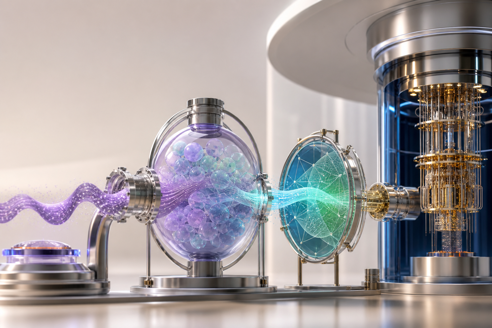
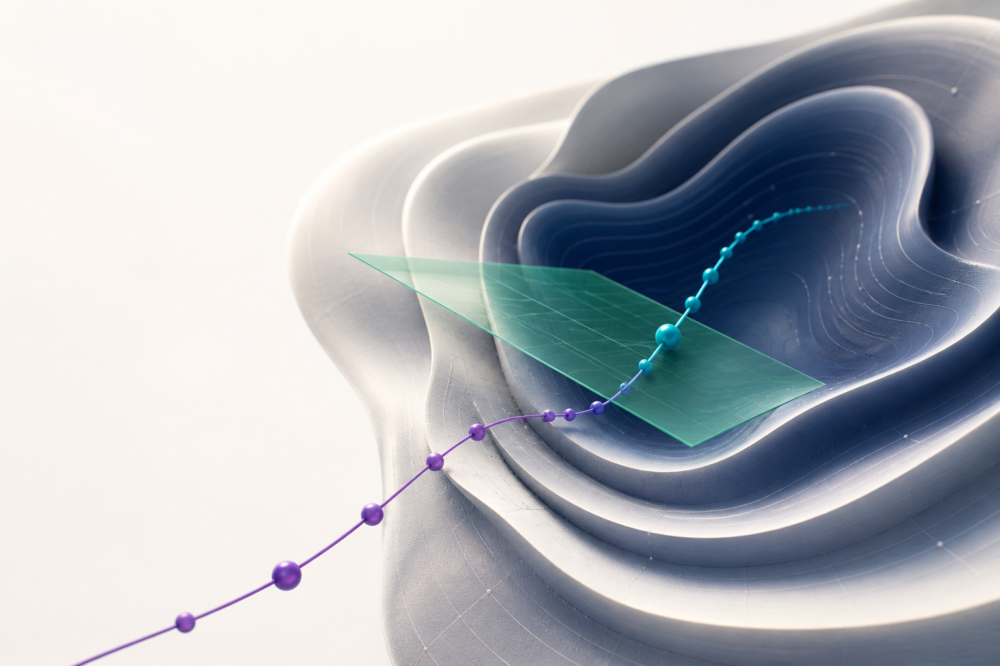
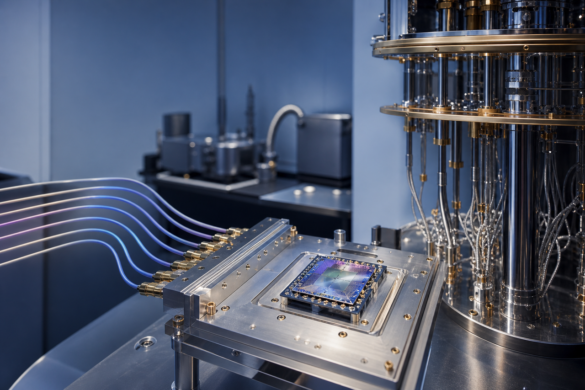

CORE RESULT ｜核心结果 · 冻结开发试验同样的事件，顺序不同，未来风险也可能不同
冲击 → 修复≠修复 → 冲击
−25.5%Registered quantum baseline
注册量子基线
−8.4%Quasi-likelihood loss｜准似然损失
相较最强经典锚点
Q-ECHO-V｜波动率量子回声把路径顺序写入可学习的量子记忆。
Causal time split｜因果时间切分Standalone forecast｜独立预测

GEOMETRIC PRINCIPLE ｜几何原理顺序如何成为可学习的距离？
静态相关只看事件集合；路径有序演化记录先后，再用量子态的局部可区分性决定学习方向。
1Non-Abelian path ordering ｜非阿贝尔路径排序\(U(x_t)U(x_{t-1})\neq U(x_{t-1})U(x_t)\)
2Mixed-state symmetric logarithmic derivative quantum Fisher information ｜混合态对称对数导数量子费舍尔信息\(\partial_i\rho=\frac12(\rho L_i+L_i\rho),\quad F_{ij}=\frac12\operatorname{Tr}[\rho\{L_i,L_j\}]\)
3Constrained quantum natural gradient ｜带 Q-TRACE 记忆约束的量子自然梯度\(\begin{bmatrix}F+\lambda I&C\\C^{\mathsf T}&0\end{bmatrix}\begin{bmatrix}\Delta\theta\\\nu\end{bmatrix}=-\begin{bmatrix}g\\0\end{bmatrix}\)

SELF-DEVELOPED CORE｜自研核心ORDER → STATE → GEOMETRY
顺序 → 状态 → 几何
INFORMATION-GEOMETRIC LEARNING ｜信息几何学习沿更可区分的量子态方向更新
\(ds_Q^2=d\theta^{\mathsf T}F\,d\theta\)
量子费舍信息决定量子几何更新；Q-TRACE 将历史重要方向写入线性约束。

REAL QUANTUM PROCESSOR READOUT ｜真实量子处理器读出4096 次真实测量
Quafu Baihua｜夸父百花 · 冻结双层电路完成最新时间步读出
Q-Market｜市场路径五日市场窗口价格、波动与风险通道按日期形成五步有序序列。
Q-ECHO｜量子回声编码路径有序量子编码非对易演化区分“先冲击”和“后冲击”。
Q-TRACE & Q-Memory｜量子轨迹记忆混合态量子记忆系统—记忆耦合同时表达近期冲击与缓慢惯性。
QFI-QNG｜量子几何学习信息几何更新量子费舍尔度量选方向，Q-TRACE 保护历史能力。
Q-Expert｜量子专家读出波动率预测输出未来波动率；冻结电路可转入真实量子处理器读出。
From market noise to measurable quantum memory.从市场噪声，到可度量的量子记忆。